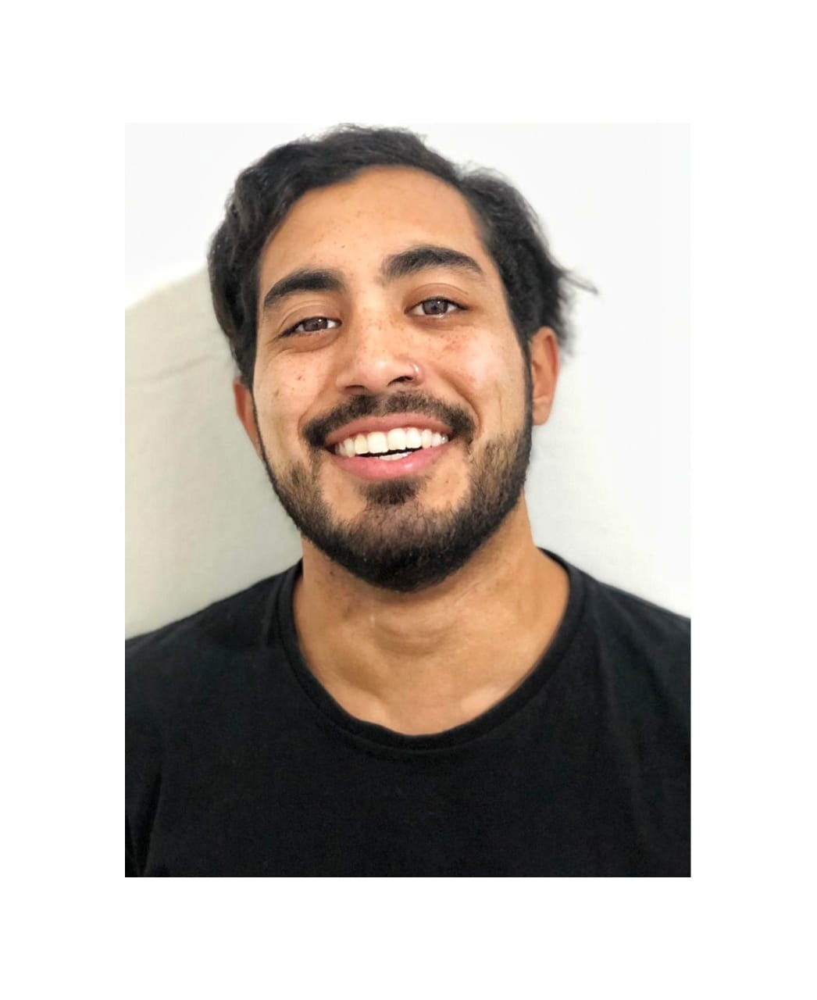

Juan F.
NATALE

Necochea, Bs.As
2262-518277
juanfnatale@gmail.com


Juan F.
NATALE
Necochea, Bs.As
2262-518277
juanfnatale@gmail.com
Hola! Que tal? Soy de Necochea, provincia de Buenos Aires, Argentina. Si hay algo que me caracteriza es la curiosidad, me gusta aprender cosas nuevas y estar siempre en continua formación. Estoy realizando la carrera de Diseño Digital en @CoderHouse, termine ya la etapa de Diseñador Web y me esperan más adelante los de Photoshop & Illustrator, y el de Diseño Ux-Ui. Me encanta trabajar en equipo y realmente más que proyectos freelance, busco formar parte de algo más grande que yo mismo. Poder aprender de gente que posea más experiencia y adentrarme de lleno en el mundo digital.


2020
Proximamente
Diseño UX-UI
Coderhouse
2020
En curso
Photoshop & Illustrator
Coderhouse
2020
Terminado
Diseño Web
Coderhouse
2017
Suspendida
Profesorado de Ed. Fisica
ISFDT N°31
2016
Terminado
Guardavidas Cruz Roja
Cruz Roja Argentina
De 06/2020 a la
actualidad.
Freelance Web Designer
Profesional independiente.
Tareas realizadas: HTML – CSS – Flex / Grid – Bootstrap4 – Sass – Git – Github – Responsive web design.
De 12/2019 al
03/2020
Municipalidad de Tres Arroyos
Guardavidas.
Tareas realizadas: Socorrismo y seguridad de playa.
De 12/2018 al
03/2019
Arenas Club de Mar
Guardavidas.
Tareas realizadas: Socorrismo y seguridad de playa.